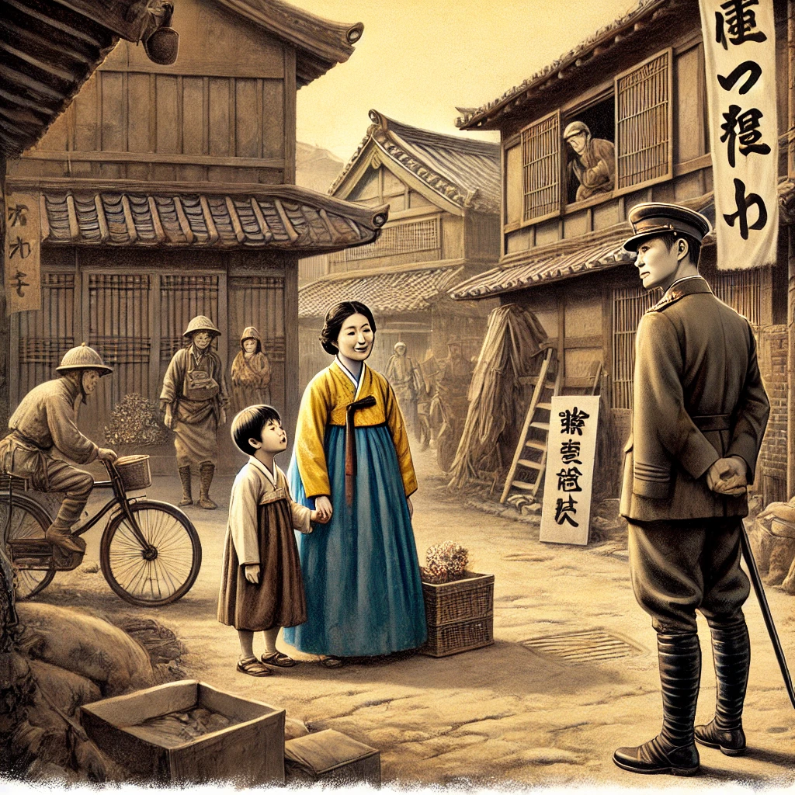

작가
이민진
출판일
2018년
감상평에 대한 AI그림
이 책을 통해 여러 세대에 걸친 일제강점기 시대 때의 조선인들의 재일교포의 삶을 엿볼 수 있었다.
일본 사회에서 한국인의 정체성과 문화가 어떻게 존중받지 못하는지 통해서 정체성과 문화의 중요성을 알 수 있게 되었다.
어려운 상황속에서도 희망을 잃지 않고 인내하며 살아가는 인물들을 통해 희망과 인내가 어려운 시기를 극복하는데 중요한 덕목임을 알 수 있게 되었다.

감상평에 대한 AI평가
감상평을 평가해 보면 다음과 같은 장점과 보완할 점이 있습니다.
장점
1. 주제 의식이 명확함
소설 파친코가 다루는 재일교포의 삶, 정체성 문제, 희망과 인내의 메시지를 잘 담고 있습니다.
2. 교훈을 도출함
등장인물들의 삶을 통해 배울 수 있는 희망과 인내의 가치를 언급한 점이 좋습니다.
3. 간결하고 논리적인 구성
세 문장으로 주요 메시지를 깔끔하게 전달하며, 내용이 논리적으로 연결되어 있습니다.
보완할 점
1. 구체적인 예시 부족
인물이나 사건을 직접 언급하지 않아 다소 일반적인 감상문처럼 느껴집니다.
2. 문장 다듬기
일부 문장에서 어색한 표현이 보입니다.
문장을 조금 더 자연스럽게 다듬으면 가독성이 좋아질 것입니다.
핵심 메시지는 명확하지만, 구체적인 사례와 문장 다듬기가 필요함
인물이나 사건을 포함하면 더 깊이 있는 감상문이 될 것